ECG Blog #439 — Có bao nhiêu khả năng?
BẠN sẽ đọc nhịp này như thế nào ở Hình 1 — nếu bạn nhận được bản ghi này mà không có chút bệnh sử nào?

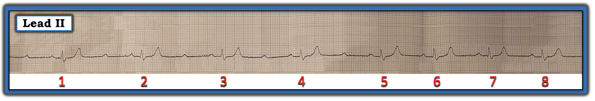
Câu trả lời "Nhanh":
Suy nghĩ ban đầu của tôi về nhịp ở Hình 1:
- Nhịp ở Hình 1 không hoàn toàn đều. Dù vậy — khoảng R-R của 5 nhát đầu trông đều. Khoảng R-R của vài nhát cuối ngắn hơn thế — nhưng cũng đều. Như vậy, có "nhịp theo nhóm (group beating)", theo nghĩa là có 2 phần ( = 2 nhóm nhát) trong bản ghi hôm nay (tức là các nhát #1 đến 5 — rồi các nhát #6 đến 8).
- Phức bộ QRS trông không rộng trên dải nhịp một chuyển đạo này. Dù vậy — vì chúng ta chỉ thấy một chuyển đạo, chúng ta không biết được QRS có thể trông rộng hơn hay không nếu nhìn từ góc độ của một chuyển đạo khác.
- Sóng P có hiện diện ở Hình 1. Có vẻ như có nhiều sóng P hơn phức bộ QRS — nghĩa là không phải mọi sóng P đều được dẫn truyền.
- Mặt khác — NẾU chúng ta nhìn phía trước mỗi phức bộ trong 8 phức bộ QRS của bản ghi này — mỗi nhát trong 8 nhát này đều có một sóng P đi trước, với khoảng PR có vẻ hằng định. Do đó, mỗi nhát trong 8 nhát này đều được dẫn truyền. Dù vậy, vì các sóng P xuất hiện gần điểm giữa của khoảng R-R ở 5 nhát đầu không được dẫn truyền — có một dạng nào đó của blốc AV.
- ĐIỂM THEN CHỐT (PEARL) #1: Trong 3 mức độ blốc AV — việc ít nhất một số sóng P được dẫn truyền cho chúng ta biết nhịp này không phải blốc AV hoàn toàn. Và vì đây không phải blốc AV độ 1 đơn thuần — nó phải là một dạng nào đó của blốc AV độ 2 ( = câu trả lời "Nhanh").
Những suy nghĩ "Nhanh" bổ sung:
Có nhiều lý do khiến bản ghi hôm nay khó đọc. Bao gồm những điều sau:
- Từ dải nhịp DII dài mà chúng ta thấy ở Hình 1 — Chúng ta không biết phức bộ QRS rộng hay hẹp. Mặc dù trông không có vẻ QRS trên dải nhịp này kéo dài quá 0.10 giây — vẫn có thể một phần của QRS nằm trên đường đẳng điện, từ đó tạo ấn tượng sai rằng QRS hẹp trong khi thực ra nó rộng. Sóng S tận rộng mà chúng ta thấy ở Hình 1 gợi ý có thể có RBBB (blốc nhánh phải — Right Bundle Branch Block) — mặc dù chúng ta không thể nói chắc chắn nếu không có bản ghi 12 chuyển đạo.
- Sóng T trên dải nhịp DII dài này trông đặc biệt "nhọn". Mức độ nhọn này rõ rệt đến mức — dường như nó vẫn sẽ hiện diện bất kể có thêm sóng P nào ẩn bên trong các sóng T này hay không. Các sóng T này cũng có một đoạn ST phẳng đến ngạc nhiên đi trước — điều này gợi ra 2 khả năng: i) Bệnh nhân có thể bị tăng kali máu (và có thể cả hạ canxi máu, xét đến các đoạn ST phẳng đi trước những sóng T nhọn này); và, ii) Có thể có nhồi máu mới xảy ra và/hoặc đang diễn ra — vì đây có thể là hoặc sóng T tối cấp hoặc sóng T tái tưới máu vốn thường gặp sau nhồi máu cơ tim cấp.
ĐIỂM THEN CHỐT (PEARL) #2: Không thể đưa ra kết luận chắc chắn nào về hình dạng ST-T từ một dải nhịp một chuyển đạo. Để làm điều này — cần có bản ghi 12 chuyển đạo.
- Lý do việc xác định có tăng kali máu hay nhồi máu mới xảy ra hay không là quan trọng — là vì cách xử trí tối ưu blốc AV có thể phụ thuộc vào câu trả lời (tức là Điều chỉnh tăng kali máu hoặc tái tưới máu tình trạng tắc động mạch vành cấp có thể là những thành phần thiết yếu của điều trị ban đầu).
- ĐIỂM THEN CHỐT (PEARL) #3: Một bệnh sử ngắn gọn, phù hợp — là một thành phần quan trọng để xử trí tối ưu các rối loạn nhịp phức tạp. Một bệnh sử ngắn gọn, phù hợp cũng có thể cung cấp manh mối quan trọng về nguyên nhân (tức là Wenckebach AV = blốc AV độ 2 Mobitz I — thường gặp nhất khi đi kèm với nhồi máu cơ tim mới xảy ra hoặc cấp thành dưới — đó là lý do tôi muốn biết NẾU hình dạng ST-T trên dải nhịp DII này có phải là hậu quả của nhồi máu cơ tim thành dưới hay không).
================================
CÂU HỎI: Sóng P có đều không?
Phần lớn trường hợp blốc AV — nhịp nhĩ sẽ đều (hoặc ít nhất gần đều — nếu có loạn nhịp xoang nền).
- Cách DỄ NHẤT để xác định nhịp nhĩ nền có đều hay không — là tìm 2 sóng P liên tiếp — rồi xem NẾU bạn có thể "dò bước" khoảng P-P này dọc suốt toàn bộ dải nhịp hay không.
- Các mũi tên ĐỎ ở Hình 2 chỉ 2 sóng P mà tôi đã chọn.

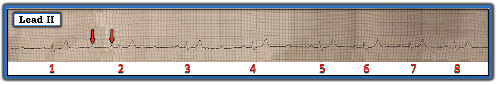
TRẢ LỜI: Sóng P có đều!
Cách NHANH NHẤT để xác định nhịp nhĩ nền ở Hình 2 là đều — là dùng compa đo (calipers).
- Các mũi tên ĐỎ ở Hình 3 đánh dấu các sóng P đều này. Tôi đã dễ dàng "dò bước" được một khoảng P-P đều dọc suốt dải nhịp này.

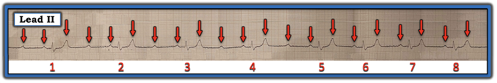
ĐIỂM THEN CHỐT (PEARL) #4: Sự kết hợp giữa nhịp theo nhóm (group beating) — với nhịp nhĩ nền đều, trong đó một số (nhưng không phải tất cả) sóng P được dẫn truyền — cần lập tức gợi ý khả năng Wenckebach AV (đặc biệt NẾU điện tâm đồ 12 chuyển đạo gợi ý nhồi máu thành dưới và/hoặc dưới-sau mới xảy ra hoặc cấp).
- Dù vậy — việc nhiều hơn một sóng P mũi tên ĐỎ liên tiếp không được dẫn truyền ở Hình 3 — cho thấy một cơ chế phức tạp hơn Mobitz I đơn thuần.
ĐIỂM THEN CHỐT (PEARL) #5: Như đã nói ở trên — rối loạn nhịp hôm nay có vẻ là một dạng nào đó của blốc AV độ 2. Điều quan trọng cần nhận thức là chúng ta không thể loại trừ khả năng nhịp này là blốc AV độ 2 Mobitz II, và trong trường hợp đó bệnh nhân sẽ cần máy tạo nhịp (Xem ECG Blog #236 — để ôn lại chẩn đoán các blốc AV độ 2 trên điện tâm đồ).
- Các tiêu chuẩn MẤU CHỐT của Mobitz II là: i) Chúng ta thấy ít nhất 2 sóng P đúng lúc liên tiếp nhưng không được dẫn truyền; và, ii) Khoảng PR giữ hằng định phía trước mọi nhát được dẫn truyền. Cả hai tiêu chuẩn này đều thỏa mãn ở Hình 3.
- Phần lớn (dù không phải luôn luôn) — phức bộ QRS sẽ rộng trong Mobitz II (vì vị trí của blốc AV này nằm dưới nút AV). Và mặc dù phức bộ QRS trông không rộng ở Hình 3 — chúng ta chỉ đang nhìn một chuyển đạo, và có thể một phần của QRS nằm trên đường đẳng điện (tức là tạo ấn tượng sai rằng QRS hẹp trong khi thực ra nó rộng).
ĐIỂM THEN CHỐT (PEARL) #6:
Dù đã nói như trên — tôi nghi ngờ nhịp hôm nay không phải Mobitz II, mà là một dạng phức tạp hơn của dẫn truyền Wenckebach.
- Mobitz I phổ biến hơn Mobitz II rất nhiều. Theo kinh nghiệm của tôi — hơn hẳn 95% trong tất cả các blốc AV độ 2 mà tôi từng gặp qua nhiều thập kỷ nghiên cứu hiện tượng này là Mobitz I. Về mặt lâm sàng, điều này quan trọng — vì khả năng cần tạo nhịp với Mobitz I thấp hơn nhiều. Ngược lại — tạo nhịp kịp thời là thiết yếu với Mobitz II, vì rối loạn dẫn truyền này có khuynh hướng đáng lo ngại là đột ngột tiến triển thành không dẫn truyền nhiều nhát liên tiếp (và thậm chí ngưng thất).
- Được xem điện tâm đồ 12 chuyển đạo của bệnh nhân này sẽ giúp hiểu rõ hơn nhiều! Ngoài việc giải quyết vấn đề độ rộng QRS — nó sẽ giúp nhận ra liệu chúng ta đang đối mặt với tăng kali máu (sóng T nhọn lan tỏa ở nhiều chuyển đạo?) — nhồi máu cơ tim thành dưới (ủng hộ Mobitz I) — hay nhồi máu cơ tim thành trước (ủng hộ Mobitz II).
- Xem lại dữ liệu theo dõi từ xa (telemetry) gần đây có thể cho câu trả lời! Chính vì chúng ta không thấy các phức bộ QRS được dẫn truyền liên tiếp ở Hình 3 — nên chúng ta không thể xác định khoảng PR có tăng dần trước khi dẫn truyền thất bại hay không. Rất khó có khả năng một bệnh nhân chuyển qua lại giữa Mobitz I và Mobitz II. Do đó — NẾU dữ liệu theo dõi từ xa đang tiến hành cho thấy những giai đoạn có Mobitz I rõ ràng (tức là khoảng PR tăng dần cho đến khi một nhát bị rớt) — thì rất có khả năng toàn bộ các bản ghi theo dõi ở bệnh nhân này đều là một biến thể nào đó của Wenckebach AV.
================================
GIẢN ĐỒ BẬC THANG (LADDERGRAM):
Đến lúc này tôi cần một giản đồ bậc thang (laddergram) để giúp tôi làm rõ giả thuyết của mình về một cơ chế hợp lý nào đó, ngoài Mobitz II, cho rối loạn nhịp phức tạp hôm nay (Hình 4).
- LƯU Ý: Tôi hoàn toàn thừa nhận rằng có thể có nhiều hơn một lời giải hợp lý cho rối loạn nhịp hôm nay (tức là Như ĐIỂM THEN CHỐT #5 — tôi không thể loại trừ khả năng rối loạn nhịp hôm nay là blốc AV độ 2 Mobitz II).

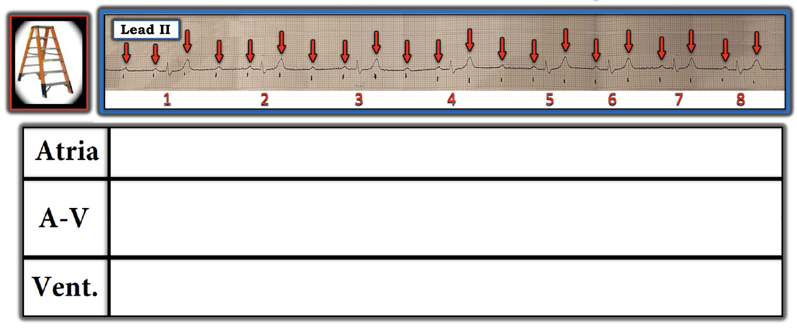
Điểm MẤU CHỐT: Như tôi đã bình luận trong các bài ECG Blog trước — dẫn truyền Wenckebach có thể xảy ra ở nhiều hơn một tầng bên trong nút AV.
- Khi điều này xảy ra — có thể thấy những mối liên quan dẫn truyền phức tạp, bao gồm không dẫn truyền các sóng P đúng lúc liên tiếp (Xem ECG Blog #259 và ECG Blog #416 — để biết thêm về Wenckebach AV hai tầng — đó chính là điều tôi nghi ngờ ở nhịp hôm nay).
===============================
TỪNG BƯỚC MỘT . . .

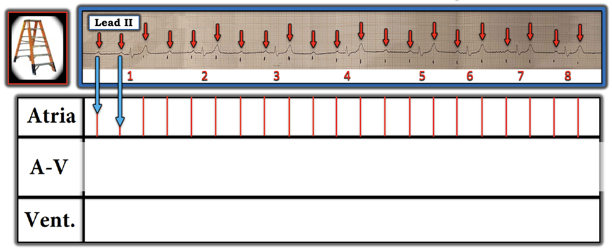

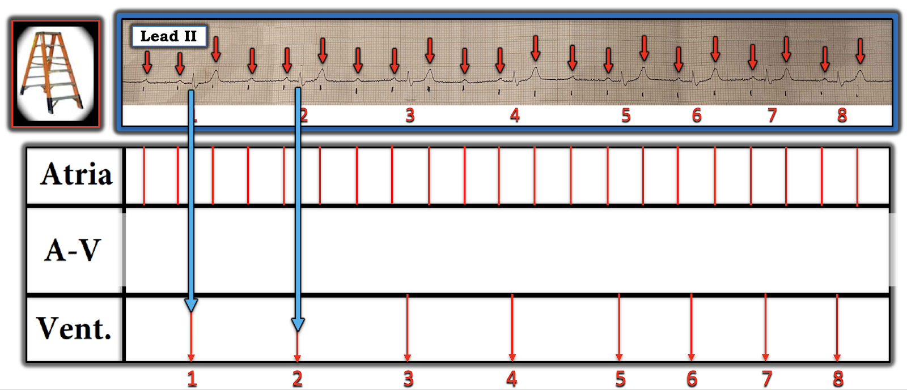
Các mũi tên XANH chỉ điểm khởi đầu của mỗi phức bộ QRS, là mốc tham chiếu của tôi cho từng phức bộ QRS trong bản ghi này.
Lưu ý rằng tôi vẽ các đường gần thẳng đứng cho mỗi nhát trong 8 nhát QRS ở Tầng Thất. (Nếu điện tâm đồ 12 chuyển đạo cho thấy blốc nhánh với phức bộ QRS rộng — khi đó tôi sẽ vẽ các đường nghiêng hơn ở tầng thất để phản ánh dẫn truyền chậm hơn khi xung động đi qua tâm thất).
Điểm MẤU CHỐT: "Phần DỄ" khi dựng phần lớn giản đồ bậc thang gồm 2 BƯỚC đầu tiên này (được trình bày ở Hình 5 và Hình 6). Giờ thì thử thách bắt đầu — cố gắng "giải" giản đồ bậc thang bằng cách tìm ra những sóng P nào ở Tầng Nhĩ được dẫn truyền xuống tâm thất.
===============================
LƯU Ý: Vì tôi nghi ngờ có blốc AV hai tầng bên trong nút AV — từ đây trở đi (bắt đầu với Hình 7) — tôi chia Tầng Nút AV thành 2 phần (bằng cách vẽ một đường chấm ĐEN nằm ngang).
===============================

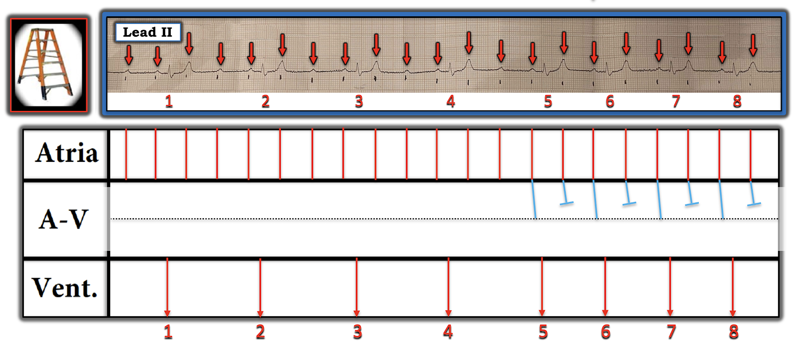

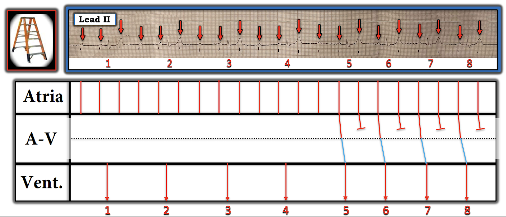

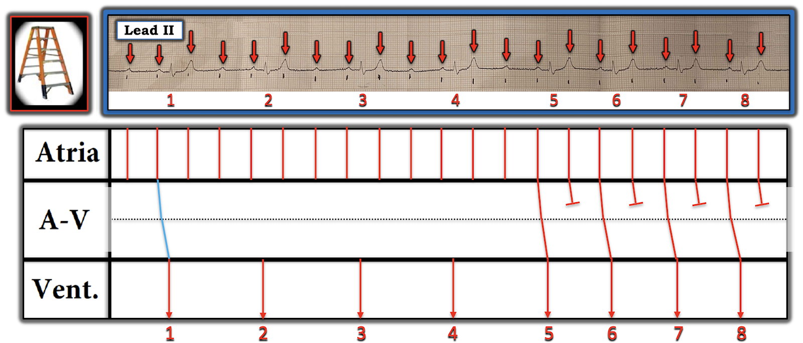

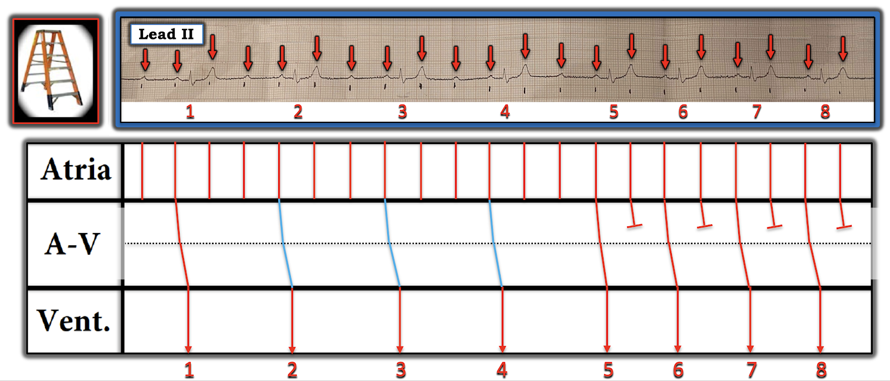

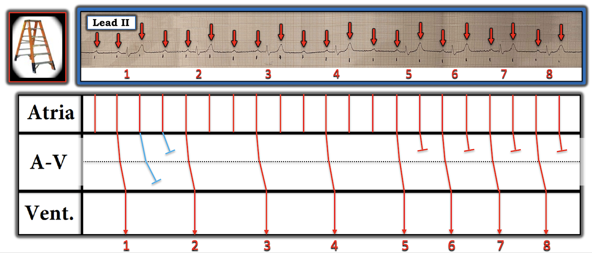

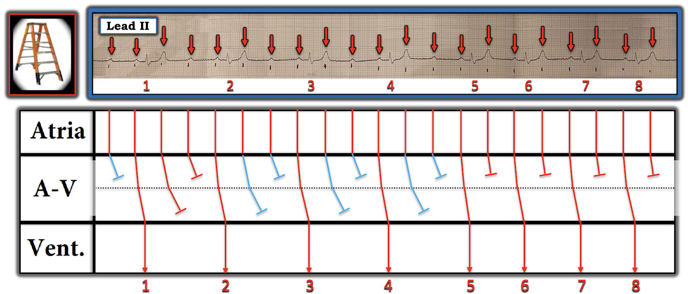

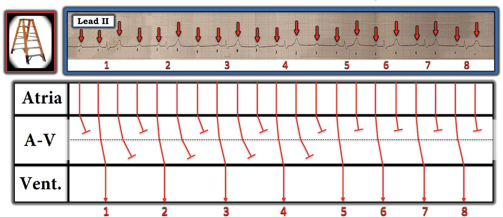
Ngược lại — có blốc AV 2:1 đơn thuần ở vài nhát cuối. Vì khó có khả năng chuyển qua lại giữa dạng Mobitz I và Mobitz II của blốc AV độ 2 — tôi cho rằng nhiều khả năng nhất là rối loạn dẫn truyền trong ca hôm nay phản ánh blốc AV độ 2, với Wenckebach AV xảy ra ở 2 tầng bên trong nút AV.
===============================
Những điểm CUỐI CÙNG về nhịp hôm nay:
- Sóng P dương ở DII — và tần số nhĩ ~100/phút. Vì vậy, thay vì nhịp nhanh nhĩ — tôi nghi ngờ chúng ta đang thấy tần số xoang hơi tăng kèm blốc AV độ 2 hai tầng như mô tả ở trên.
- Về câu hỏi nhịp hôm nay có phải là một dạng "mức độ cao" của blốc AV hay không — tôi thấy câu trả lời mang tính ngữ nghĩa, ở chỗ: i) Blốc này có thể được xem là "mức độ cao" — vì có hơn 1 sóng P đúng lúc liên tiếp không được dẫn truyền; — NHƯNG — ii) Blốc xảy ra ở 2 tầng của nút AV — và ở mỗi tầng này đều là blốc kiểu Mobitz I (mà Mobitz I nhìn chung không được coi là một rối loạn dẫn truyền "mức độ cao").
- Dù vậy — tần số thất chung của nhịp hôm nay chậm (giảm xuống khoảng 40). Vì vậy, nếu nhịp chậm đáng kể kéo dài (đặc biệt nếu kèm triệu chứng) — thì có thể cần tạo nhịp.
- "Tin tốt" — là nguyên nhân của nhịp chậm và blốc dẫn truyền này có thể là hậu quả của một tình trạng "sửa được", mà nếu được phát hiện và điều trị thành công, có thể khôi phục tần số và nhịp bình thường (tức là Nếu sóng T nhọn là do tăng kali máu — hoặc nếu có thể tái tưới máu thành công một ổ nhồi máu cấp).
- Xử trí thành công bệnh nhân hôm nay sẽ phụ thuộc vào việc xác định nguyên nhân của nhịp này.
==========================================
Lời cảm ơn: Xin cảm ơn Sam Collis (từ Anh) đã cung cấp ca bệnh và bản ghi này.
==========================================

==============================
Các bài ECG Blog liên quan (đến ca hôm nay):
- ECG Blog #205 — Ôn lại Cách tiếp cận hệ thống của tôi trong đọc điện tâm đồ 12 chuyển đạo.
- ECG Blog #185 — Ôn lại Hệ thống đọc nhịp của tôi, dùng Cách tiếp cận Ps, Qs, 3R.
- ECG Blog #188 — Ôn lại cách đọc và vẽ giản đồ bậc thang (kèm LINK tới hơn 100 ca có giản đồ bậc thang — nhiều ca có minh họa tuần tự từng bước).
- ECG Blog #192 — 3 nguyên nhân của phân ly nhĩ thất.
- ECG Blog #191 — Ôn lại sự khác biệt giữa phân ly nhĩ thất với blốc AV hoàn toàn.
- ECG Blog #389 — ECG Blog #373 — và ECG Blog #344 — để ôn lại một số ca minh họa "giải quyết vấn đề blốc AV".
- ECG Blog #251 — Ôn lại các khái niệm tính chu kỳ Wenckebach và "Dấu chân" của Wenckebach.
- ECG Blog #164 — Ôn lại một ca blốc AV độ 2 Mobitz I điển hình (kèm bàn luận chi tiết về "Dấu chân" của Wenckebach).
- ECG Blog #63 — Blốc AV độ 2 Mobitz I kèm các nhát thoát bộ nối.
- ECG Blog #267 — Ôn lại, bằng giản đồ bậc thang từng bước, việc suy luận một ca Mobitz I có nhiều hơn một cách giải thích khả dĩ.
- ECG Blog #259 — Ôn lại giản đồ bậc thang từng bước ở một bệnh nhân có blốc AV hai tầng.
- ECG Blog #243 — Ôn lại một ca cuồng nhĩ (AFlutter) với Wenckebach hai tầng ở đường ra khỏi nút AV.
- ECG Blog #226 — Phân tích một ca bệnh phức tạp (kèm một ECG Video Pearl dài 11:00 phút hướng dẫn bạn từng bước dựng một giản đồ bậc thang có dẫn truyền Wenckebach và blốc hai tầng bên trong nút AV).
- ECG Blog #416 — Ca bệnh OMI cấp với minh họa từng bước về Wenckebach AV hai tầng.
- ECG Blog #405 — Bài trình bày Video ECG ôn lại sự phân biệt giữa phân ly nhĩ thất với blốc AV hoàn toàn (độ 3) (Để xem Mục lục có LINK của ECG Video này — bấm MORE trong phần Mô tả bên dưới video trên YouTube).

PHẦN BỔ SUNG (18/7/2024):

ECG Media PEARL #71 (5:45 phút Audio) — Ôn lại hiện tượng Wenckebach hai tầng ở đường ra khỏi nút AV (CÁCH nhận biết hiện tượng này — và cách phân biệt nó với Mobitz II).